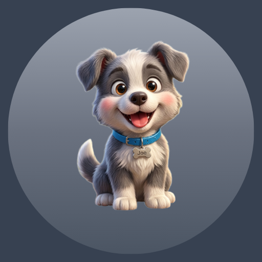

JWO Little Joe 3D
Um jogo de corrida 3D simples, divertido e fácil de jogar.

JWO Little Joe 3DJWO Little Joe 3D é um jogo de corrida infinita simples, divertido e fácil de jogar, desenvolvido para oferecer uma experiência 3D colorida e envolvente para todas as idades. Acompanhe o adorável cachorrinho Little Joe, com sua pelagem cinza e branca, em uma corrida cheia de desafios e aventuras. Little Joe corre automaticamente por um ambiente 3D, enquanto o jogador precisa controlar seus movimentos e realizar saltos no momento certo para evitar leões, obstáculos e vãos pelo caminho. Conforme a corrida continua, a velocidade aumenta gradualmente, tornando os desafios cada vez mais intensos. O jogador começa com 4 vidas e deve permanecer na corrida pelo maior tempo possível. A pontuação aumenta conforme Little Joe sobrevive e avança pelo percurso, permitindo que cada nova partida seja uma oportunidade para alcançar uma pontuação ainda maior. Com personagens 3D, ambientes coloridos, elementos arredondados e um estilo visual de desenho animado, JWO Little Joe 3D combina simplicidade e diversão em uma experiência acessível, dinâmica e fácil de entender.
- Corrida infinita em um divertido ambiente 3D
- Controles simples e fáceis de aprender
- Desafios crescentes com obstáculos e leões
- Gráficos coloridos com estilo desenho animado
- Sistema de vidas e pontuação para novas conquistas
Baixe agora o JWO Little Joe 3D e descubra até onde você consegue chegar!